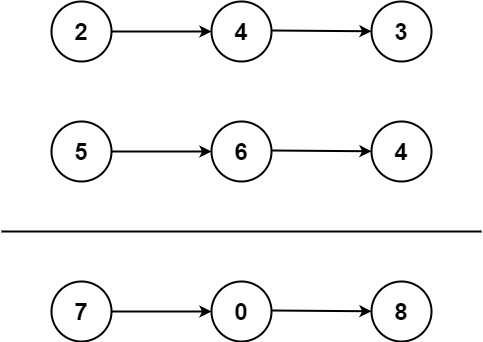

books / hot100 / 03-题解 / 07-链表
2. 两数相加
| 题目信息 | 内容 |
|---|---|
| 难度 | 中等 |
| 核心模式 | 逐位模拟 + 进位 |
| 时间复杂度 | O(max(m,n)) |
| 空间复杂度 | O(1) 除答案外 |
题目与约束
给你两个 非空 的链表，表示两个非负的整数。它们每位数字都是按照 逆序 的方式存储的，并且每个节点只能存储 一位 数字。
请你将两个数相加，并以相同形式返回一个表示和的链表。
你可以假设除了数字 0 之外，这两个数都不会以 0 开头。
示例 1：

输入：l1 = [2,4,3], l2 = [5,6,4]
输出：[7,0,8]
解释：342 + 465 = 807.
示例 2：
输入：l1 = [0], l2 = [0]
输出：[0]
示例 3：
输入：l1 = [9,9,9,9,9,9,9], l2 = [9,9,9,9]
输出：[8,9,9,9,0,0,0,1]
提示：
- 每个链表中的节点数在范围
[1, 100]内 0 <= Node.val <= 9- 题目数据保证列表表示的数字不含前导零
核心不变量
循环条件必须包含两个链表和最后的 carry。
完整推导
思路推导
-
直觉与痛点（转成整数再加）：
最容易想到的办法是：把链表里的数字读出来，拼成一个真正的
int或long，把两个数加起来，然后再拆成链表。痛点：极其危险！如果链表非常长（比如有 100 个节点），拼出来的数字连
BigInteger处理起来都费劲，绝对会引发数值溢出（Overflow）。 -
破局思路（按位模拟竖式加法）：
回归小学数学，按位对齐相加，满十进一。
我们需要三个“小助手”：
- 指针
p1：负责遍历链表 1。 - 指针
p2：负责遍历链表 2。 - 变量
carry（进位）：负责记录相加满 10 后进位的值（要么是 0，要么是 1）。
- 指针
-
灵魂技巧（虚拟头节点 Dummy Node）：
因为我们在不断生成新的结果节点，需要一个指针把它们串起来。为了避免判断“这是不是第一个节点”的繁琐逻辑，我们先造一个假的车头
dummy，最后直接返回dummy.next即可。 -
逻辑推演（以
[2, 4, 3]和[5, 6, 6]为例）：也就是计算 342 + 665：
- 个位：
2 + 5 + 进位0 = 7。不进位 (carry=0)。结果链表挂上7。 - 十位：
4 + 6 + 进位0 = 10。满十进一 (carry=1)。当前位留下10 % 10 = 0。结果链表挂上0。 - 百位：
3 + 6 + 进位1 = 10。满十进一 (carry=1)。当前位留下0。结果链表挂上0。 - 收尾（极其重要）：两个链表都走完了，但
carry里还有个1！我们必须为它新建一个节点挂在最后。结果链表挂上1。 - 最终结果链表：
[7, 0, 0, 1]（即数字 1007，完美匹配）。
Java 实现
- 个位：
/**
* Definition for singly-linked list.
* public class ListNode {
* int val;
* ListNode next;
* ListNode() {}
* ListNode(int val) { this.val = val; }
* ListNode(int val, ListNode next) { this.val = val; this.next = next; }
* }
*/
class Solution {
public ListNode addTwoNumbers(ListNode l1, ListNode l2) {
// 创建虚拟头节点，化解复杂的头节点判定逻辑
ListNode dummy = new ListNode(-1);
ListNode curr = dummy;
int carry = 0; // 进位器
// 核心循环：只要 l1 没走完，或者 l2 没走完，或者进位器里还有值，就继续加！
// 这里的 carry != 0 是防止最高位溢出的灵魂判断！
while (l1 != null || l2 != null || carry != 0) {
// 如果链表短，走完了就用 0 占位代入计算
int val1 = (l1 != null) ? l1.val : 0;
int val2 = (l2 != null) ? l2.val : 0;
// 计算当前位的总和
int sum = val1 + val2 + carry;
// 更新进位（满十进一）
carry = sum / 10;
// 计算当前位要留下的数字，并挂到结果链表上
curr.next = new ListNode(sum % 10);
curr = curr.next;
// 稳步推进指针
if (l1 != null) l1 = l1.next;
if (l2 != null) l2 = l2.next;
}
return dummy.next;
}
}
复杂度
- 时间复杂度：。M 和 N 分别是两个链表的长度。我们最多只遍历较长链表的长度加一次额外收尾。
- 空间复杂度：O(1)。这里只算额外开销，返回的结果链表不算在空间复杂度内。我们只用了
carry和几个指针。
易错点与扩展（你一定会踩的坑）
- 最大陷阱：忽略最后的进位（Edge Case）
- 测试用例：
[9, 9]和[1]（99 + 1 = 100）。 - 如果不把carry != 0写进while的条件里，很多新手会在循环结束后漏掉最高位的1，导致答案变成[0, 0]而不是正确的[0, 0, 1]。 - 面试追问：“如果这道题链表是正序存储的（比如 342 存为
3 -> 4 -> 2），你该怎么做？” - 回答套路：这是另一道经典题（LeetCode 445: 两数相加 II）。因为加法必须从低位开始，而链表只能从高位往低位走。破局方法有两个：- 方法一：先把两个链表反转（Reverse），变成逆序，然后直接复用我们这道题的代码，最后把结果再反转回来。
- 方法二：利用栈（Stack）。把两个链表的数字全压入栈中，然后利用栈“后进先出”的特性，依次弹栈进行加法运算，每次算出来的新节点用“头插法”接入结果链表。